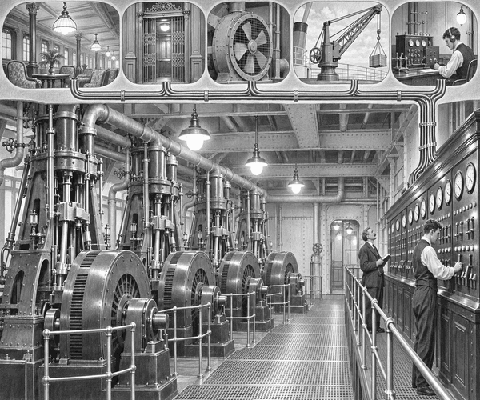

In 1912, electric light still felt exciting.
Many homes did not have it.
But Titanic carried a whole electric world.
Deep inside the ship was the electric engine room.
It sat behind the great turbine.
Four large generating sets stood in a row.
Each set had a steam engine.
Each engine was joined to a dynamo.
A dynamo is a machine that makes electricity.
First, the boilers heated water.
The water became steam.
The steam pushed pistons up and down.
The moving pistons turned a shaft.
The shaft spun the dynamo.
Chuff. Whirr. Hum.
Electric current flowed into thick cables.
Engineers watched round gauges.
They used a long switchboard made from dark polished stone.
From there, the cables spread through the ship.
They reached passageways.
They reached cabins.
They reached the boat deck high above.
Titanic carried about ten thousand electric lamps.
Small night lamps could glow gently in first-class cabins.
Bright lamps shone in working rooms below.
Electric motors moved four passenger lifts.
They turned large ventilation fans.
They powered deck cranes and cargo winches.
They helped lift mail bags between decks.
Electricity even worked machines in the kitchens.
There were dough mixers.
There were knife cleaners.
There were potato peelers.
Electric power also helped the wireless equipment send messages.
Titanic's propellers were not driven by electric motors.
Huge steam engines and a turbine turned them.
But electricity made many other parts of the ship work.
There was also a second power station.
It held two smaller generating sets.
They were placed higher inside the ship.
They could provide important power if the main sets stopped.
Power fact: Titanic had four main steam-driven dynamos. Each could make 400 kilowatts of electric power.
Bright fact: Titanic had about ten thousand electric lamps, plus 153 electric motors for machines around the ship.
Passengers saw the glowing lamps.
They rode in the lifts.
They felt fresh air from the fans.
Most never saw the machines that made it happen.
Far below them, four dynamos kept turning.
Chuff. Whirr. Hum.
Titanic carried a hidden electric city across the sea.